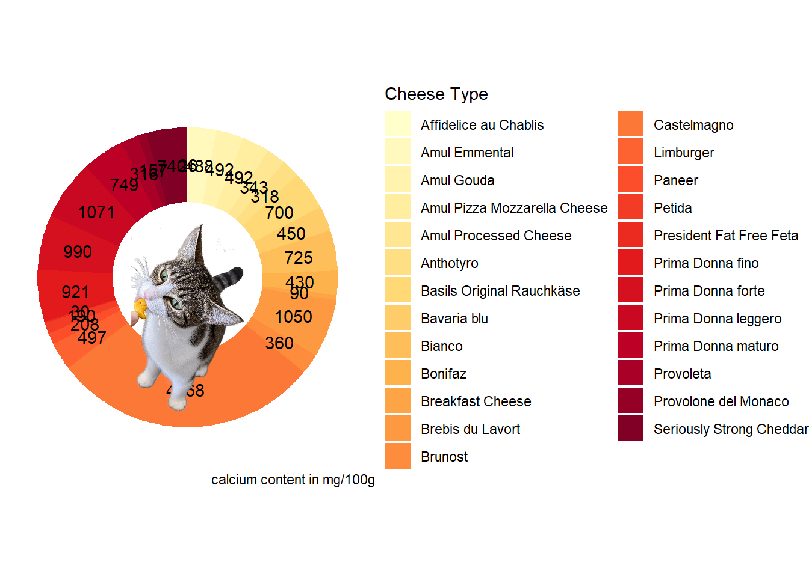
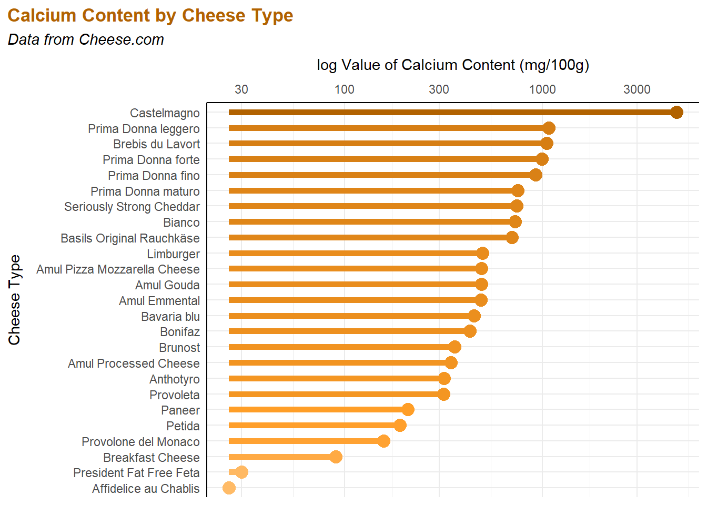

Click here to display code
library(tidyverse)
library(RColorBrewer)
library(here)
library(ggplot2)
library(readr)
library(magick)
library(ggimage)I really love cheese, so I want to play with some data that will support my cheese consumption habits by showing cheese is part of a healthy, balanced diet. Cheese contains calcium, which supports bone and dental structure and density, proper muscle contraction, and nerve cell communication. With many folks opting for oat milk or other substitutes over regular milk these days, cheese provides a solid option to maintain the daily dose of 1,000 mg of calcium per day recommended by the NIH.
library(tidyverse)
library(RColorBrewer)
library(here)
library(ggplot2)
library(readr)
library(magick)
library(ggimage)## Read in data from TidyTuesday
tuesdata <- tidytuesdayR::tt_load('2024-06-04')
cheeses <- tuesdata$cheeses
## View the cheese data
View(cheeses)## Clean the cheese data
clean_cheese <- cheeses |>
select(cheese,calcium_content) |> # Select only the columns we will be working with
drop_na(calcium_content) |> # Remove cheeses that do not have information on calcium content
mutate(calcium_content = readr::parse_number(calcium_content)) # Add a column for calcium content that only includes the value and not the units
View(clean_cheese)## Compute percentages from calcium data to use in the doughnut plot
clean_cheese$fraction = clean_cheese$calcium_content/sum(clean_cheese$calcium_content)## Compute boundaries of each rectangle to use in the doughnut plot
clean_cheese$ymax = cumsum(clean_cheese$fraction) # Compute rectangle top
clean_cheese$ymin = c(0,head(clean_cheese$ymax, n=-1)) # Compute rectangle bottom
clean_cheese <- clean_cheese |>
mutate(label_position=(ymax+ymin)/2) # Compute rectangle midpoint to add text values to the plot later## Make some fun stupid elements to add to the plot later
cheese_colors <- colorRampPalette(brewer.pal(9,"YlOrRd"))(25) # Build a cheesy color palette for the doughnut plot
prince <- image_read("C:/Users/cjonees/Desktop/Repositories/Jones_OCN682/Prince_cheese.png") # Read in a png of Prince with a goldfish cracker## Time to make the worst plot of my life
clean_cheese |>
ggplot(aes(ymax=ymax,ymin=ymin,xmax=4,xmin=3,fill=cheese)) +
geom_rect() + # Create a rectangle plot
coord_polar(theta="y") + # Convert the rectangle into a circular pie chart
xlim(c(2,4)) + # Create a hole in the center of the chart to make a doughnut
theme_void() + # Remove the axes to clean it just a little, but not too much because this still has to be terrible
scale_fill_manual(name="Cheese Type",values=cheese_colors) + # Add the cheese color gradient
geom_text(aes(x=3.5,y=label_position,label=calcium_content),inherit.aes = FALSE) + # Place values for calcium content over the doughnut plot
labs(caption="calcium content in mg/100g") + # Add title and caption
geom_image(aes(x=2.5, y =0.5), image = "C:/Users/cjonees/Desktop/Repositories/Jones_OCN682/Prince_cheese.png", size = 0.3, inherit.aes = FALSE)
ggsave(here("Good-Plot_Bad-Plot_ESJ","Outputs","BadPlot.png"))It breaks SO many rules. It is:
On top of all that, part of the data is obscured because somehow, Prince found his way onto the chart to sit right on top of the value for Castelmagno cheese while eating a cheesy Goldfish cracker! How dare he.
clean_cheese <- clean_cheese |>
mutate(log_calcium = log10(calcium_content))clean_cheese |>
ggplot(aes(x=forcats::fct_reorder(cheese,calcium_content), # Make a basic plot, reordered so cheese is listed by calcium content
y=calcium_content)) +
geom_segment(aes(xend=cheese,
y=min(calcium_content),
yend=calcium_content,
color=log_calcium),
linewidth = 2) + # Turn it into a lollipop plot
geom_point(aes(color=log_calcium),size=4) +
scale_color_gradientn(colors = c("#FFBB67","#FF9E27","#B16200"), # Add a color gradient to get darker as calcium content increases
values = c(0,0.4,1)) +
scale_y_log10(position="right") + # Take the log of the calcium data to make it easier to visualize
labs(title = "Calcium Content by Cheese Type", # Add a title, subtitle, and axes titles
subtitle = "Data from Cheese.com",
x = "Cheese Type", y = "log Value of Calcium Content (mg/100g)") +
theme_minimal() +
theme(legend.position="none",
axis.line = element_line(color="black"),
axis.title.x.top = element_text(margin = margin(b = 10)),
axis.title.y = element_text(margin = margin(r = 10)),
plot.title.position = "plot",
plot.title = element_text(color = "#B16200", face = "bold",hjust=0),
plot.subtitle = element_text(face = "italic",hjust=0) # Edit the title, subtitle, and axes titles
) +
coord_flip() # Flip the plot so the calcium content is at the top and cheeses are shown from highest to lowest calcium content, top to bottom
ggsave(here("Good-Plot_Bad-Plot_ESJ","Outputs","GoodPlot.png"))This plot is much clearer and gets the point across quickly. It:
It has a little less whimsy and cuteness due to the lack of Prince, but he was a bit distracting in the first plot anyways.
Now, we can all see that if we want to truly bulk up on our calcium, we just need to eat a little bit of Castelmagno each day. The only problem is Iʻve never heard of this type of cheese, and according to the data it comes from the Piedmont region of Italy and costs roughly $300 USD a wheel. So unless we want to write a giant grant together and take a class field trip, it might be hard to come by.

Citations
Dataframe from TidyTuesday (2024).
Cheese data from Cheese.com.
Plot choice assistance from Data to Viz.
Let it be known that Data to Viz valiantly attempted to get me to use anything but a doughnut plot
Data visualization guidelines (which were subsequently broken) from the following texts: